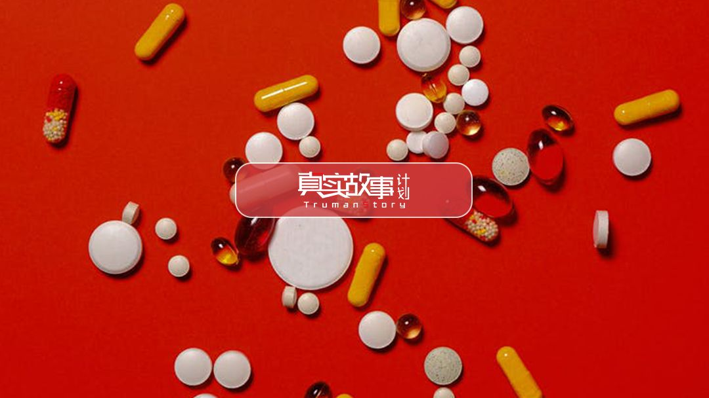
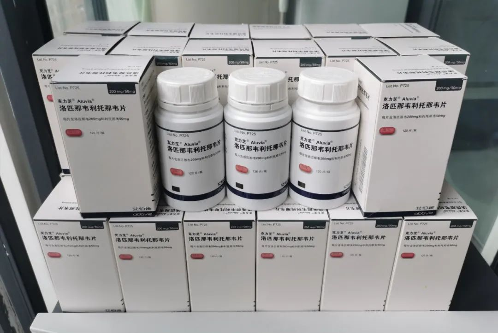
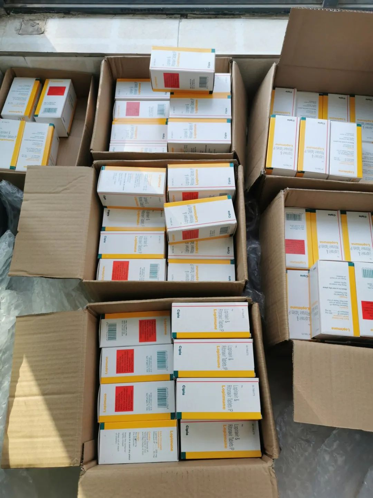
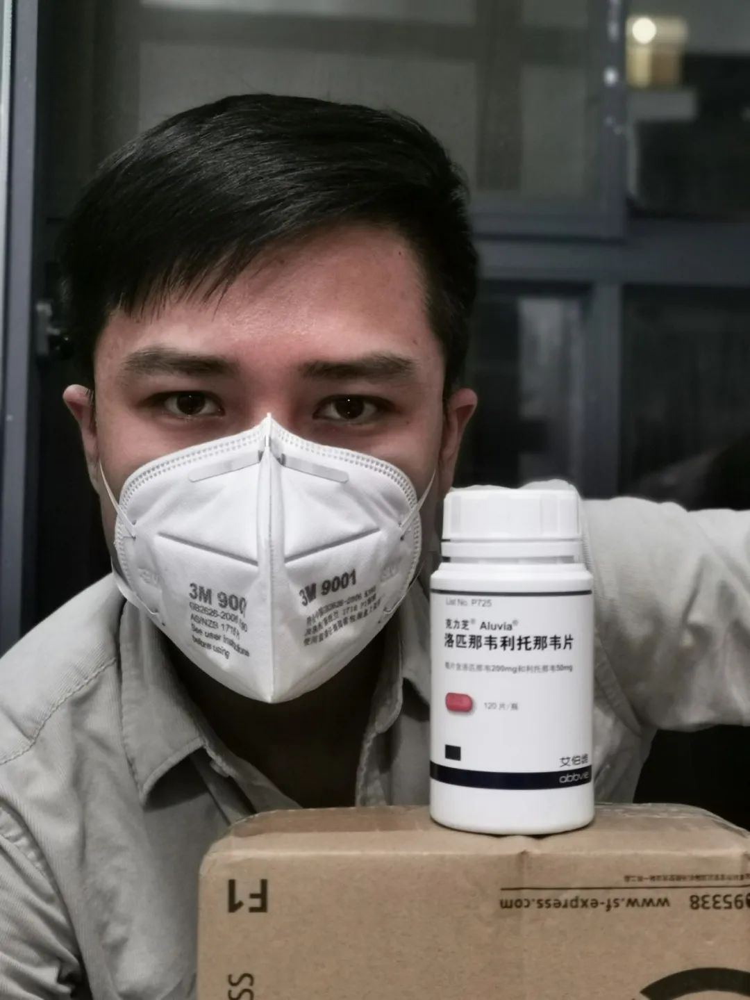

送药给新冠病人的HIV感染者 | 正午
原文链接 备份链接 编者按：1月28日，HIV感染者“HIV松鼠哥”发微博称，可以向确诊的新冠病毒肺炎患者免费提供“克力芝”——一种被列入《新型冠状病毒感染的肺炎诊疗方案》的抗HIV药物，药品则主要来自国内HIV感染者的捐赠。从那天起，他 …

“洛匹那韦/利托那韦”——一种由疾控中心免费发放给HIV感染者的抗艾药物，商品名为“克力芝”。它作为推荐的“抗病毒治疗”药物之一，写在国家卫健委第三到第六版新冠肺炎诊疗方案中（目前，该诊疗方案更新至第六版）。
在过去20多天，全国各地的HIV感染者把手中闲置的“克力芝”寄给位于郑州的一名志愿者“松鼠哥”，由他把这些药物发到武汉的新冠肺炎患者手中，用于治疗。2020年1月28日，他发微博称，收到了HIV感染者寄来的40余盒克力芝，还有220盒从印度订购的克力芝正在路上，预计可以救助300名新冠肺炎患者。
松鼠哥写道：“虽然两个患者群体感染的并非同一种病毒，但我们与冠状病毒感染者不仅药物相同，对他们的处境也更能感同深受，所以我们始终是乐于伸出援手的群体之一，我们迫切地希望你们都能活下来，获得彻底的治愈！”
以下为“松鼠哥”的口述：
 募药
募药
我1月23号看到新闻，感染新型肺炎的北大一院呼吸科主任王广发宣称克力芝对他有效，1月24号、25号我就动员HIV感染者来募集药物了。
一开始，我们得知的消息是，一些抗艾药物可能对新冠有效。当时有一些HIV感染者的群在讨论，说HIV感染者不是易感人群，上海的卢洪洲教授也说，HIV感染者的很多药物都可能对新冠有效。由于当时还不明确有效药物是“克力芝”，我的第一反应是，我们的药物供应可能会出现药荒。
很多HIV感染者服用的是自费药，有的人也从国外买药，根据我的职业敏感度和这么多年的服药经验，我预测，如果药物有效，那么HIV感染者在短时间内，可能会拿不到药，药物也可能涨价。所以当时我写了一条微博提示大家这一点。
后来新闻报道，又发现了新的抗艾药多替拉韦钠可能有效，我开玩笑说“可能是想玩死我们”。因为新闻提到的多替拉韦钠这个药物，很多HIV感染者都在自费吃。自费的药物是市场上自由流通的，不是国家按需分配，如果这个药物被证实对新冠有效，新冠病人也去买，我们就吃不到了，对我们来说就是一个很大的变动。
这个药出现药荒，HIV感染者群体会产生巨大的震动。多替拉韦钠比克力芝好很多，它的耐药屏障更高，副作用更小，抗病毒效果也更强，所以很多人自费在吃。不过，这也意味着，一旦服用这个药物的感染者，因断药造成耐药，会引发很严重的后果——可能会出现原发耐药毒株，并且在人群中传播了，之后感染了这种毒株的人，就会直接没有药可吃，对于这些感染者和整个社会来说都是一种威胁。
克力芝能够用于治疗新冠，我觉得是好事，只要有药能治新冠，我们都很开心。但是另一方面，如果真的是多替拉韦钠这么重要的药，对我们来说确实很可怕。
后来了解到的信息是，比较明确治疗效果的只有克力芝，我们的一颗心就放下来了。毕竟，非吃克力芝不可的HIV感染者不多。它是国家免费药，副作用偏大，很多HIV感染者服用一段时间后会更换成其他自费药物。
与此同时，有很多新冠患者开始找到我要克力芝，我开始思考，怎样有效地利用药物资源，把它们送到真正有需要的人手里。
我们很清楚正常情况下，这个药物流通性很差。一直以来，它是定点定时投放给HIV感染者的处方药，只有HIV感染者到定点医院或疾控中心才能开。药房买不到，普通的医院也没有。这个药如果能治新型肺炎，短时间内一定是不够的，我们想要做一个补充。倒并不是说我们能够供应多么大的量，只是说尽自己的心力能做多少算多少。
我没有公开募集“克力芝”，更多是是私底下一个一个联系。因为当时印度厂商已经涨价了，国内可能会有人倒卖这个药，我怕被人误会。
HIV感染者更换自费药的时候，可能之前在医院开了三个月的克力芝，他们的手头会有一两盒一直闲置的药物。我们动员的就是这部分人。
一开始，我去动员一些比较熟的感染者，只要简单沟通就行了。我说，你现在有没有克力芝，有的话，不如给我。他们很快就同意了，而且还会去动员身边的人，很快我们就募集到了40多盒，HIV感染者们自己承担运费寄给我。

图 | 初期40多盒HIV感染者捐助的克力芝
也有一部分感染者正在服用克力芝，但已经在考虑要换成自费药，克力芝对他们来说已经不太合适了。找到他们之后，我们就建议他们，不如趁现在就换了。他们就会去医院开自费药，然后把克力芝寄给我。还有一些想捐药的人，本身正在服用克力芝，我们拒绝他们，告诉他们说：没有必要这样，你首先要保障你自己。
本身服用克力芝的HIV感染者很少，有闲置克力芝的就更少了，加上有很多人现在就封闭在老家，他们想要捐药也没办法。所以，我们已经把能接触到的资源都调用得差不多了。
所有捐药的人，都知道这个药可能会被用于新冠的治疗。他们可以不捐，私下把药物卖掉赚一点钱，或者留在身边，给家里人备用。但他们还是把药物捐了出来。
根据当时的信息，我们估计一名新冠患者需要56粒药，我们一份给60粒。因为国内的克力芝一盒有120粒，从HIV感染者募集来的这批药一共发出了120人份。
一开始我给药很大方，没有问太多细节，觉得你来了，我就尽量给，还有印度药在路上，应该可以接上。
有一家三口被感染的，求助者说家里的年轻人不要了，帮他的父母求药。我发了三人份的药给他们，鼓励他们“一家人就是要齐齐整整”。
一位男护士说自己也买了克力芝，暂时还没寄到，先找我求助，之后再还给我。他和母亲都被感染了，但他只要了一人份，给母亲。我就只给了他一人份，即使他自己买的药到了，自己吃也是应该的，我也不会收。
有个女孩，她的父母离异了，有精神障碍的母亲被隔离。听到她这么说，我心里特别难受，因为我的父亲也有精神障碍，特别能理解她。但我当时已经没有药了，印度药也还在等，我就把我给家人预备的药寄给了她。
我们捐赠克力芝，只是作为患者治疗的一个补充，所以一开始要求患者必须要提供医生的处方。我自己做审核的时候，就是看他们的医疗凭据，只要有医疗凭据，我都会给。医护人员就是看工作证和工作照，确定身份了，我也会给。
直到我收到了一份似曾相识的检查报告。这让我意识到，可能会有人拿着别人的材料发给我，之后我就要求他们都要提供身份证，要确定跟医疗凭证中是同一个人。
另一个我一开始没有考虑到的是：克力芝对重症患者可能是无效的。有人提醒我，克力芝对轻症、中症患者的治疗效果更好，我又想办法去核实了，去看他们推荐给我的医学博士的文章。好几位的文章，我都从头到尾一字不落地看完了。所以后来我们送药的方向也有所调整，把药物尽量给轻症患者。
最开始送药的时候，药物会滞留在快递站点，没人派送，一些患者因此没有及时收到药。我们就想是不是可以找人帮忙派送。有一位朋友介绍了蜘蛛哥给我，当时我还不知道他是视频博主。我把药分装好以后，装进一个大箱子里，统一寄给他。药盒上贴着地址，同时把患者、地址和联系方式的表格单独再发给他一份，他按照信息来送。
做这件事的时候，有一位求助者给我转了2000块钱，我收了，想着用于后面的采购。我们自己的人知道后，就紧急叫停了，让我后面不要再收任何一笔钱，因为哪怕我收了一分钱，都要公示账目。我们没有精力去计算、去公示。所以我们筹资范围控制在HIV感染者群体内部，稍微扩大了几个朋友相熟的朋友。
我们是为了把药弄过来，再把药送到患者手里，但还是担心有人说闲话质疑，所以我们干脆就选择效率高、风险小的方式——自己花钱。虽然成本高一点，但对我们来说也没有太多经济压力。钱花了不要紧，再赚嘛，毕竟是这么多条人命，肯定是人命是最重要的，钱都是次要的。

面向HIV感染者筹克力芝时，我们在印度也订了3批药，第一批220盒，第二批100盒，第三批108盒。印度药是一盒60粒，这428盒就能救428个人。
这三批印度药，每一次订货价格都不一样，一直在涨。有一回我刚付了钱，印度那边就告诉我说没有货。国内的情况这么紧急，但印度那边老是让我等，说他们还在放假，不发货。我们很着急，多个渠道去找药，因为想要的版本老是找不到，找到了还让等，后面的一些药我们就被迫订了别的厂家。
印度药到了海关之后，好几天包裹的状态都没更新。我有些着急，就打电话问海关，想问一下是不是能放行？如果需要什么材料我可以去找。我当时没有想到这个事情的难度。因为我们以前购买自用药物，海关是会放行的。
克力芝并不是强仿药，因为已经过了专利期了，任何一个厂家生产都是合法的，不存在侵权或违反WTO规定的问题。而且又是印度的大厂家，我本来是觉得没问题的。
海关工作人员问我，能提供受捐单位的接收函吗？我说好我去找。
我其实一开始觉得医院很可能不会收印度药，所以当时计划拿回来后直接赠送给患者。现在药物过不了海关，就觉得如果有医院肯接收也不错。
愿意接收的医院很不好找，我们从印度买的药物没有相关批文，大部分医院都不会要。最后，通过朋友的帮忙，我们联系上两家湖北乡镇一级的医院，开了一个愿意接收、请海关放行的材料，盖了章。
找到了接收医院我们很开心，但还要去药监局开许可。药监局说现在这个情况确实比较特殊，需要向国家药监局反映，后来反馈给我说可能比较难办，即使能办也要等。我觉得，接着等也是等一个不确定的消息，不如直接抓紧时间赶紧退回去，之后再走别的办法进来。
后来我就在想，如果不是提前联系了海关，可能还有一定几率不被抽检，直接放行。当时海关首先要放行救援物资，他们也很忙，其他包裹可能就停了几天，我一着急，反而让他们发现了这批药，就没办法放行了。
这几天我就一直在懊悔和自责，可以选择更好的方式把药弄进来过来，不应该赌。就是因为知道这个病进展很快，急着想把这个药弄回来，没有想那么多。
我们一开始觉得这些药都能顺利拿到，能救助500人。但实际上我们发放的药物会浪费一部分，后面的药物又没有到。我觉得自己做出了错误的判断，觉得自己不应该那么鲁莽，其实还有很多地方可以做得更好。
其实海关和药监局全程都很帮忙，派了专人来处理我的事情，劳心劳力，跟我反复打电话沟通了好几次。他们不停地向上级请示，也想把这批药弄过来，但是有一些事情不是他们能够决定的，不能违规违法。我也不怪他们，也能感觉到，他们自己也觉得很抱歉。
300多盒印度药到海关的时候，另一批100盒从香港走的印度药也快到了。但是之前说好帮我收货的朋友已经回不去香港了，被封闭在了老家，这100盒药我们一时就不知道怎么运进来了。后来香港限制跨境人流，时间就更紧迫。
刚好有一个志愿者团体找到了我，问我是否需要帮助。这个团体是一个因为疫情成立的小组，他们也是从各地采买这些药物，或者从印度“人肉”带药回来。他们在网络上看到送药志愿者“蜘蛛哥”的视频，找到我的时候我也很惊讶，原来这个事情居然还有人在做。他们因为不是HIV感染者，不懂药、没有经验、没有渠道，种种原因，走了弯路。好在我比较懂药，能够提供一些渠道、资源以及建议，他们则有各方面的人脉资源。
通过他们的帮助，很快就找到了香港的朋友，几个人分批帮我把这100盒药带回来。那天是2月7号，中午香港的顺丰小哥帮我代签收，下午一点，跟香港的朋友碰头，然后就带到了内地。
当时我很吃惊，我之前都觉得可能希望不大了。
这100盒药就可以救100个人啊。

图 | 从香港转运回内地的100盒印度药
在等印度药的时候，我会给求助者编号，等药到了，按照编号顺序发放。那时我这排了70多个编号，后来我只发出不到50份，因为其中有20多人让出了自己在排的药。“让出”这两个字是我斟酌过的。我不希望在微博上写他们“放弃”了自己的编号。
“让出”的人，有一些是已经治愈了，也有患者已经去世了，患者的家属就不要了。其实这个行为挺令人钦佩的。因为多拿一盒药也不嫌多，留着自己备用也是可以的，或者拿去送人，或者卖掉。但是他们没有要，没有人说我就非要贪这一份药。现在这个局面，我们都知道这个药意味着什么。这也是为什么，这个药多少钱我都不会卖，因为它不能够用金钱来衡量，它代表的是一份生存的希望，甚至有可能它真的就救活了一个人。他们让出这个机会的时候，我觉得很了不起，也让我很感动。
从海关把印度药退回去后，我才想起，其实可以走个人自用的途径寄过来。
我打算让全国各地的HIV感染者来收这些药，再把药发给我，我审核过后，再寄给新冠患者。发出倡议30分钟不到，已经有7位HIV感染者报名，后来又有了十几个，目前还处于准备阶段。
本来我们要再订一批药，但是现在印度那边的药非常贵，因为已经卖得差不多了。我们也实在拿不出钱。我们跟印度人商量，可不可以先发给我们，我们用退回去的那批药换。他们不答应。所以现在就只能等我们的药回到印度再说。
 *只能赠送，绝对不能卖*
*只能赠送，绝对不能卖*
开始发药的第三天，我的微信不能用了。后台显示，我被举报存在违规现象。我后来想到，一些人想买克力芝找过来的人，我处理得不是很恰当。不是每一个人来找我，我的态度都很好，我要承认这是我的失误，或许是因为这样惹了麻烦。
有一些人说我想买来备用，我说提供不了。有一些人说我想买，问我卖多少钱，我直接说不卖，默认了这些想买药的人就不是患者。我觉得这是我的一个失误，我应该审核一下他们是不是患者，如果是患者，我应该跟他们说，我这边不卖，都是捐助。
微信号没了，说实话，当时有一种如释重负的感觉。那时是中午，我去洗了个澡，睡了一觉，醒了之后才把新号的二维码发在微博上，让大家能找到我。
我真的想休息一会。前面几天我几乎没有睡。第一次涌进了这么多的信息，对我来说是精神上的高负荷，大脑一直在运转，难以入睡。即使躺着，即使我跟别人说我睡了，也睡不着。
这段时间我每天要打包很多快递，家里本来有差不多两三百个打包盒，印度药还没到，就已经用完了。我只能到顺丰要来一些包装袋，拿泡沫纸把药包起来以后装到袋里。整天发包裹的情况下都没发完，到最后那一位，我下单的时候顺丰已经不接了，派到了第二天。
每天要发的药，我会把求助者姓名、电话写下来。打包好了，打一个红色的勾，顺丰下单了，打一个绿色的勾，发免责声明了，再打一个蓝色的勾。这样几件事情做完，我就已经很累了。有人问我包裹到哪了，我都没有精力回复。
我的家人知道我正在做什么。我把新闻发给他们了，也算是跟我妈炫耀一下吧，“我上新闻了”。家里都知道我是HIV感染者，亲戚都知道，只不过都没有提，心照不宣。
家人很支持我，觉得我做得很好。他们跟我说，最好的处理方式就是赠送，只能赠送，绝对不能卖。
看到网友把我和“药神”做比较，我还是比较得意的，毕竟这是一个正面形象。不过，因为我是学电影的，加上我对药物代购的了解，我觉得电影通过主角最后牺牲自己免费发药的这种方式，来把主角捧上神坛，是有问题的。
首先，不是非要以这样的方式来去做，才能够提升他的人格。电影也没有考虑到实际情况，患者是长期的患者，真的为了这些患者考虑，你得卖、你得盈利，你得让整个事情运转下去，才能够把它做好，否则在实际操作层面上，让资金链断了，让患者以后没有药吃了，这是说不过去的。
虽然现在我也在免费捐药，但如果我们面对的是一个需要长期服药的疾病，我也不会免费捐。因为如果你是长期吃，我就得考虑能够长期供应给病人，这种情况下盈利才能保障我有长期供应的能力。
很多人觉得我很勇敢、我很善良，这些夸奖对我来说都不存在。其实这件事没有像网友以为的那么可怕，没有那么大的风险，可能有一些技术难度，但不是勇气和善良的问题，只是很多人因为没有这个条件——没有资源，没有资金，所以办不到。我就是有这些药，把它给出去而已，对我来说很难吗？
网络舆论的风险是有的。可能会有人去恶意地揣测、去解读我，或者解读HIV感染者群体，这些声音甚至有可能来自于感染者群体内部。对于无端质疑我也不知道怎么应对，我对自己说，内心强大一点，有些声音不要理会它就是了。
现在我这边药物的事情暂时放下了，只是志愿者团体的工作。等疫情过去以后，我就继续回去做HIV感染者的相关工作了。
2月1号，我收到第一位用药的反馈信息，告诉我服用之后正在好转。其实后来收到的反馈不算太多。一方面可能很多患者比较忙，没有时间反馈；另一方面，可能有一部分重症患者真的吃了没用，又或是不太确定是不是这个药物起了作用，也有患者收到药还没吃，就已经退烧了。
好在没有让人担心的反馈。我能想到的最坏的结果，就是患者吃药之后，还是去世了，最后家属把责任归到我身上。如果真出现了这个状况，我不确定自己要不要负责任。
我们赠送药物的行为本身是合法的。我在做HIV感染者的借药平台之前，已经查过合法性问题。我看到的法律条文说，企业向个人赠送药物是不合法的，但是没有看到个人向个人赠送药物是不合法的。后来经过多方了解，医院可能不能接收药物捐赠，医生也没有权力直接把药给患者，所以如果要帮助新冠患者，我们认为只有现在这条路能走。
为了规避可能的风险，我会让求助者签署免责声明，写明这是处于紧急的、迫切的需求下的人道救助，是患者的自愿行为，如果出现了什么情况，由患者自担自负。相应地，我会保证我们提供的药物是真的，没有一瓶是假药。我自己服用抗艾药8年，做借药平台也两年多了，这个我能够保证。
2月份后，慢慢地有一些有医学背景的大V，写文章说这个药物是有效的。包括泰国的治疗方案里面，克力芝是一个很重要的药物。这些信息都让我慢慢明确，我们做的这个事情是值得的，没有白白地冒风险，我们赌这一把也算是赌对了。
后来，有一天我正在审核求助者信息，给他们编号，HIV患者群本来每天都在聊新冠和抗艾药物的事，突然有人说，李兰娟院士表示克力芝对新冠没有什么效果。我就在网上搜了搜评论和相关资料，发了一条微博。
其实对我来说，这个表态并没有什么太大的影响。我们是按照国家的指南来的，它什么时候剔除了克力芝，我们就什么时候终止活动。当时我判断这个事可以继续做，但我还是得发一条微博，如果我不发，很多人都会发私信给我，说这个药没有用，你的活动终止吧之类的。
* **疫情下的HIV感染者*
**疫情下的HIV感染者*
疫情之前，借药的人不是很多，一个月大概三四个，少的时候就两三个。但那几天突然有20多人找到我，后面几天，陆陆续续找来借HIV免费药的人没有停过。
疫情造成一些城市封锁的初期，光处理HIV感染者借药的事，我就已经忙到没时间睡觉了，开始给新冠患者送药后就更很难了。
如果是因为封城导致拿不到药，那些地方基本上我的药也发不过去。我把他们拉到一个群里，想着是不是可以相互之间借用、分配一下。但实际情况是所有进这个群的人都缺药，大家都很无助，迫不得已就只能停药。我也只能在微博里面写一篇文章，告诉他们怎么样科学地停药。
后来，我找到机会把剩下的药全部打包发到武汉去，在群里和他们说，你们武汉内部看能不能自己想办法解决取药的问题，因为我实在没有精力继续照顾了。有一位HIV感染者朋友说，他的朋友可以帮忙。我一看，这是我的克力芝受助人。之前他找到我，说他有一位朋友的家属感染了，想向我求助克力芝。按流程审核通过后，药也发给他了。
他不是HIV感染者，但通过朋友转达说愿意帮忙散发药物，我就发给他了。蜘蛛哥也一样，他们都不是HIV感染者，但在疫情面前，HIV感染者也好，非感染者也好，我们之间没有隔阂，我们在做一样的事情。

图 | 2月2日，松鼠哥把抗艾药物打包发往武汉。
但我没有考虑到，他住在汉口，是新冠的重灾区，有些人因此不敢去拿药。其实武汉有很多人并不是拿不到药，是不敢去传染病医院领取，所以我才找了个人。他们还是不敢去汉口。最后，我让他把药发给了武汉同志中心，之后还有来找我借药的，我就都转给武汉同志中心了。
国家疾控中心其实也出台了应对策略，HIV感染者可以联系当地疾控中心去领药。这个应对策略比较及时，但现实层面，去领药的路上，有时道路不通，有些地方疾控没有上班，联系不到，还有些HIV感染者不愿意求助于地方疾控，担心会被老家的人知道。
我在微博上会批评他们，这种时候已经是保命要紧了，很多时候要自私一点机灵一点，不要太在乎其他。如果是我，我肯定要拿到药的，会想尽各种办法，就是要让自己吃到药，让自己活下去。在这个时候还考虑什么隐私呢？
* **相似的迷茫*
**相似的迷茫*
我一直在做HIV感染者的志愿工作，接触过很多新发的HIV感染者，我很清楚他们心路历程。
他们在感染之初会把这个疾病想象成一个绝症，会把自己的情况想象得严重很多。这会让他们做出很多错误的判断，让他们错过很多正确的求助机会或自救机会。
其实对于现在的新冠感染者也是一样。相比而言，我觉得新冠患者比我们感染时要糟糕得多，因为他们面对的是一个未知的疾病。我们都想帮助他们，但也无从下手，他们一定也非常无助、非常恐惧，甚至可能会非常愤怒。他们害怕传染给别人，自我封闭、自我隔离，同时又要向外求助。
我们这些艾滋病患者愿意帮助他们，患者跟患者之间一定是有共情的。
我曾说，希望能借这个活动，抵消一部分人对HIV感染者们的敌意和偏见，但这并不是我们做这件事情的初衷。我们的初衷是为了救人，并不是为了给我们的群体谋求什么。如果能够起到一点点效果也好，如果没有，我们也不强求。
所谓偏见，就是很多人会误认为HIV感染者都长得一个样子，都是青面獠牙的。但是实际上我们也是有血有肉、活生生的人。我们有感情，我们也想要帮助别人。我们不指望能消除歧视，只是觉得能让大家看到，HIV感染者中，有我们这样一群热血善良的人存在，就可以了。
我的事情，以后可能也不会有人记得了。我希望它被忘记呀，它为什么需要被提起来？我还是想要轻松的生活呀，希望这个事情过去以后，就回归到平常的状态，还做我原来的事，还是给HIV感染者借药就完了。我特别怕天天微博上总有人给我评论说你好伟大，你好了不起，是英雄什么的。只是刚好我有这些资源而已，不代表我做了什么了不得的事情和多大的牺牲。

图 | 松鼠哥与“克力芝”
我现在很想去武汉。我的脑海里一直出现武汉的画面，之前多次去武汉的画面。以前的武汉是很热闹的，我很喜欢的一个地方。疫情结束，我就一定要去。也有朋友在武汉，我很想去拥抱他们，他们虽然现在隔离在家，但从头到尾他们都不是一个人在战斗。
*2月19日，松鼠哥更新了微博，网友捐赠的100瓶60粒版的克力芝寄到了他的手上。这代表着，他将向150名新冠患者提供这个国家卫健委推荐的抗病毒治疗药物。
口述 | 松鼠哥
撰文 | 张一川
编辑 | 温丽虹

原文链接 备份链接 编者按：1月28日，HIV感染者“HIV松鼠哥”发微博称，可以向确诊的新冠病毒肺炎患者免费提供“克力芝”——一种被列入《新型冠状病毒感染的肺炎诊疗方案》的抗HIV药物，药品则主要来自国内HIV感染者的捐赠。从那天起，他 …
原文链接 备份链接 凤凰新闻客户端 凤凰网在人间工作室出品 1月28日下午两点，一位在武汉隔离病房的母亲刚刚吸出一些母乳。她有两个孩子，小的还在哺乳期。这是向松鼠哥求助的200多名新冠肺炎感染者之一。 松鼠哥是一名HIV感染者。1月28 …
原文链接 备份链接 “ 不管是艾滋病人还是新冠肺炎感染者，我们都希望更多的人能够活下来。 —全民故事计划的第442个故事 — 一 1月26日，国家卫健委发布新型冠状病毒感染的肺炎诊疗方案（试行第三版），其中对于口服药物治疗一览中，增加了推 …
原文链接 备份链接 新冠病毒肺炎的临床治疗有了新进展：一款未上市的药物在一名美国重症患者身上使用后，症状得到了明显缓解。这款叫做瑞德西韦（remdesivir）的药物也一夜之间受到了前所未有的关注，几天之内中国药监局确认受理瑞德西韦的临 …
原文链接 备份链接 2020年1月23日10点，出于对新型冠状病毒疫情的控制，武汉正式封城。 在影响居民的日常生活之外，这一突然的决定，还威胁着HIV感染者的生命健康。 HIV感染者需要定点定时服用抗病毒药物保证治疗的有效性，而中国绝大部 …